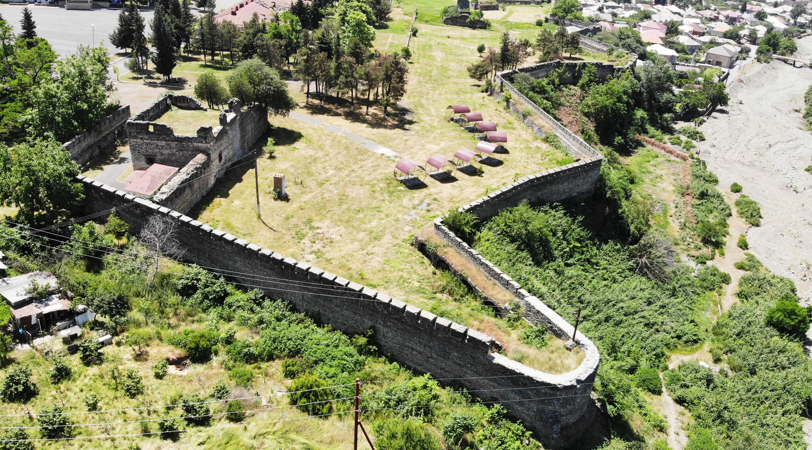

ZAQATALA QALASI
Zaqatala Azərbaycanın Şimal-qərbində , Böyük Qafqaz sıra dağlarının cənub yamaclarında Qanıx – Əyriçay vadisində
yerləşir. Rayonun ərazisi 1348 kv km olub dağlıq və düzənlik sahədən ibarətdir. Zaqatala şimaldan Rusiya Federasiyası
ilə, cənubdan Gürcüstan Respublikası ilə ,şərqdən Azərbaycan Respublikasının Qax rayonu ilə qərbdən Azərbaycan Respublikasının
Balakən rayonu ilə həmsərhəddir. Keçmiş Car – Balakən ərazisi hərbi – strateji cəhətdən çox əlverişli idi. Belə ki, Azərbaycanın
şərqinə Şəki – Şamaxı – Bakı istiqamətlərinə və Dağıstana gedən yollar buradan keçirdi. Zaqatala qalası Zaqafqaziyada olan rus
qoşunlarının komandanı general feld-marşal Paskeviçin əmri ilə tikilmişdir.

Qalanın tikdirməkdə çar hökuməti iki məqsəd güdürdü.
1. Rus işğalçılarına qarşı gələcəkdə yerli əhalinin qaldıracağı qiyam və
üsyanların yatırılmasında dayaq məntəqəsi rolunu oynamalı.
2. Dağıstanı cənubdan tutmaq üçün.
Artıq 1830-cu ildə Zaqatala qalasının divarlarının tikintisinə başlanıldı
Üçbucaq şəklində olan qalanın iki tərəfi şərq və qərbdən sıldırımdır.
Şimal tərəfdən yer səviyyəsindədir. Mühafizə məqsədi ilə hasarın çöl
tərəfindən eni 10 metr dərinliyi 5 metr olan xəndək qazılmışdır. Qalanın
sahəsi
11,5 hektardır, divarların uzunluğu 3000 metr,
hündürlüyü 3-5 metrdir.

Qalanın 3 böyük qapısı var.
1. ŞƏRQ QAPISI. Zabit qapısı adlanır. Bu qapıdan rus ordusunun komandir
heyəti istifadə edirdi. Qapı Zaqatala şəhərinə açılır.
2. ŞİMAL QAPISI. Əsgər qapısı adlanır. Əsgərlər təlim keçmək üçün bu
qapıdan qaladüzünə çıxırmışlar.
3. ŞİMAL-QƏRB QAPISI. Nəqliyyat qapısı adlanır. Qalaya qoşun üçün lazım olan
ərzaq, silah, hərbi sursat bu qapıdan daşınırdı.
Qalada daimi olaraq 2500 əsgər, bəzən isə vəziyyət hərbi xarakter aldığı
zaman Zaqatala qalasında 8-10 minə qədər əsgər yerləşdirilmişdir.
Qalanın şimal- qərb müşahidə bürcü olumuşdur. Bürc iki mərtəbəli olub
üstünə çıxmaq üçün torpaq yol salınmışdır.Onun altında və divar boyu içəri
tərəfdən dustaqları saxlamaq üçün kameralar, karserlər və həbsxanalar
tikilmişdir.

Qala XIX əsr tikilisi olmasına baxmayaraq orta əsr qalalarında olduğu
kimi mühasirədən çıxmaq üçün qalanın altından yeraltı iki yol çəkilmişdir.
Yeraltı yollar qalanın altı ilə iki istiqamətdə uzanır.
1. Qala ərazisindəki kilsənin yanından şəhərə doğru.
2. Qalanın ərazisindən şimala qaladüzü istiqamətinə gedir
Müxtəlif vaxtlarda böyük hərbi qüvvələr qalanı mühasirədə saxlasalarda
onu ələ keçirə bilməmişlər. 1830-cu il Zaqatala üsyanına kömək məqsədi ilə
Dağıstanın imamı Həmzət bəy 2000 nəfərlik qoşunla qala üzərinə hücuma
keçdi. Məğlubiyyətə uğrayan çar qoşunları hələ tikintisi tam başa çatmayan
qala divarları arxasında müdafiəyə çəkilərək kömək üçün yeni qüvvələr
gözlədilər.Ancaq tezliklə böyük qüvvə üstünlüyünə malik olan rus qoşunları
üsyanı amansızcasına yatırdılar.
1863-cü ildə Zaqatalada yenidən böyük üsyan baş verdi. Üsyana keçmiş
çar zabiti əslən Balakənli olan Hacı Murtuzun və Kebeloba kəndindən
Zəngi Əfəndinin başçılığı altında üsyançı dəstələr Zaqatala qalası üzərinə hücuma keçdi. Üsyan yatırıldıqdan sonra üsyanın başçıları
hesab olunan 18 nəfər qala qüzü ərazisində edam olunur, onların içərisində Zəngi Əfəndi də vardı.
1864-cü ildə Dağıstan Rusiyaya birləşdirildikdən sonra yəni Qafqaz qəti olaraq Rusiyaya birləşdirildikdən sonra Zaqatala qalası
öz əvvəlki hərbi əhəmiyyətini itirmişdi.
1905-1907-ci il inqilabından sonra Qalada 201-ci Lebedinski ehtiyat polkunun II batalyonu yerləşdirilmişdi. Dobrovolskiyə
podpolkovnik rütbəsi və külli ixtiyar verildi. 
Musavat hakimiyyəti zamanı Zaqatala qalasında Əhməd bəy Dibirovun
komandan olduğu Musavat piyada polku yerləşdirilmişdi. Banditizmə
qarşı mübarizə aparan çekistlərin Dövlət Siyasi İdarəsi burada
yerləşirdi.Sonralar qala ərazisində azyaşlıların islah olunması üçün
təcridxana, Tütün kombinatı, Rayon Mərkəzi xəstəxanası, 1967-ci ildən
Zaqatala diyarşünaslıq muzeyi, mebel fabriki, 1№ li internat məktəbi,
Gənc Texniklər Stansiyası fəaliyyət göstərmişdir.
Müstəqillik elan olunduqdan sonra Daxili qoşunların
N saylı hərbi hissəsi qalada yerləşirdi.
Hal-hazırda Zaqatala Dövlət Rəsm qalereyası və Zaqatala Şəhər
Mədəniyyət evi qalada yerləşir.
Zaqatala qalasında “Yenilməz batalyon” , “ Cavad xan” filmləri çəkilib.
Azərbaycan SSR Nazirlər Sovetinin 24 yanvar 1984-cü il tarixli 22 saylı qərarına əsasən Zaqatala qalası, Zaqatala Tarix – Mədəniyyət qoruğu elan olunmuşdur.